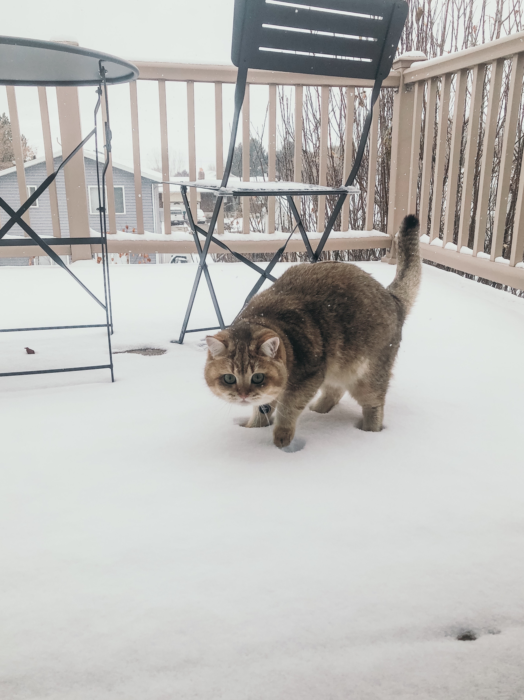

About Me
Hello! Welcome to my first web-site. My name is Vlada, and I am a future geologist. People who know me and my life path usually wonder how I could move across the world without any help or friends. Really, how a girl with limited resources got a degree from Florida State University in two years? My answer is straightforward. It took two hard years of work and learning, sleepless nights, and no time to rest. In reality, the outcome is quite breathtaking. I could not do this alone, so I got a nice fluffy ball of joy. Please welcome Archer, who helped me through my college and word, who has been in several states, and is definitely hating snow!
As you can tell, I had a pretty fun last couple of years. Here is the map of my moves throughout the years.